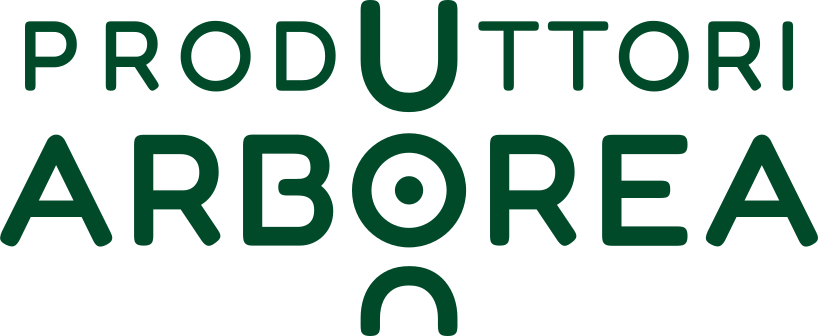

Dal Logudoro alla piana di Arborea, l'allevamento è il lavoro di ogni giorno.

Sc. 1 · 0:00 – 0:08↻ RivediScena 01 · Il contesto Motion graphic
- A schermo
- Marchio Meridoro in carne #8D1926 (tinta fuori dalle versioni previste dal brandbook: da confermare) · «Dal Logudoro alla piana di Arborea, l'allevamento è il lavoro di ogni giorno.» · marchio Produttori Arborea in basso a sinistra
- Voce
- In Sardegna l'allevamento è il lavoro di ogni giorno, dal nord dell'isola fino alla piana di Arborea.
- Regia
- Il paesaggio illustrato Meridoro (i due ori del design system) riempie il frame e prende vita: mucche e pecore pascolano, l'erba si muove, la camera avanza lenta. Il titolo entra in campagna sopra il cielo chiaro. Nessun logo: l'apertura è il territorio.
- Clip
- Animazione generata con AI partendo dal paesaggio del design system (7 s, versione di prova a 720p). Tratto e colori restano quelli dell'originale.
- Nota
- L'avanzamento è un po' deciso: alla fine l'albero di destra esce dal quadro. Per la versione finale a 1080p si può chiedere una camera ferma o quasi.